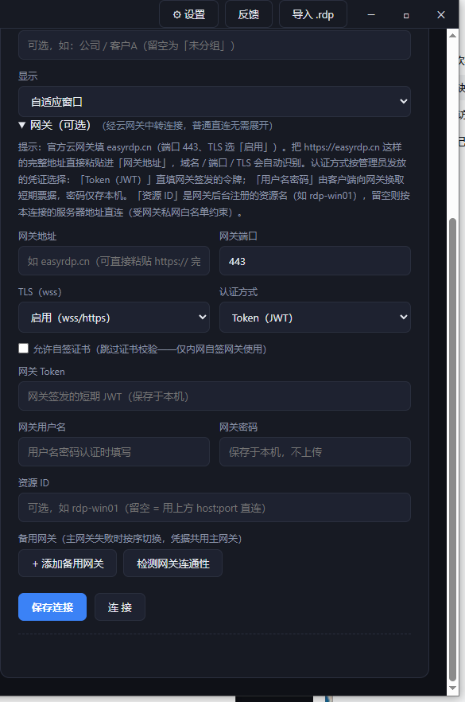

网关接入 （F4 · 云网关中转）
网关让客户端只出站访问网关的 443（或自定）端口，由网关通过隧道转发 RDP 流量，
内网主机无需暴露 3389 端口。官方云网关地址 easyrdp.cn（端口 443、TLS 启用）；
企业也可用开源的 easyrdp-gateway 服务端自建（见下载页「网关」资产）。
功能入口
「＋ 新建连接」或编辑已有连接 → 弹窗内展开「网关（可选）」折叠区 （普通直连无需展开）。相关控件：折叠区内的「＋ 添加备用网关」与 「检测网关连通性」按钮。
云网关服务状态与获取凭据
官方云网关已部署于 easyrdp.cn（端口 443、TLS 启用），可直接使用。
自 v0.4.2 起，配套用户服务台 gw-admin.html：
注册登录后可查看已授权资源，并自助签发短期 Token（JWT）用于网关连接。
企业内网自建网关仍使用开源的 easyrdp-gateway 服务端（见下载页「网关」资产）。
参数说明
- 网关地址（hostname）：网关域名或 IP。支持直接粘贴
https://gw.corp.com:8443这样的完整地址，域名 / 端口 / TLS 自动识别。 - 网关端口（port）：1–65535，官方云网关为 443。
- TLS（use_tls）：启用后经 TLS 隧道（公网网关必开；wss 通道）。
- 允许自签证书（allow_self_signed）：跳过证书校验，仅限内网自签网关，公网网关严禁勾选。
- 认证方式（auth）：
Token（JWT）：直填网关签发的短期令牌；用户名密码：由客户端向网关换取短期票据，密码仅保存在本机（Windows 下经 DPAPI 加密存储）；inherit（跟随连接）：沿用该连接的服务器凭据。
- 网关 Token / 用户名 / 密码：按所选认证方式填写；已保存的凭据不回显明文（placeholder 提示「已保存（留空保持不变）」）。
- 资源 ID（resource_id）：网关后台注册的资源名（如
rdp-win01）。留空则按本连接的服务器地址直连（受网关私网白名单约束）。 - OTP 二次认证：网关开启 OTP 后，连接时会弹出「网关要求 OTP 二次认证」输入框，输入 6 位验证码即可续连，无需改配置。
- 备用网关（fallbacks）：主网关失败时按列表顺序故障转移，凭据与主网关共用；每项可单独设置地址 / 端口 / TLS / 自签豁免。
- 检测网关连通性：对主网关 + 全部备用网关并发健康探测，逐节点显示 绿/红 + 延迟。
小贴士：模板库发布的模板会自动剥离网关 token / 密码 / OTP 等凭据字段；导出 .rdp 时网关字段映射为 mstsc 的
gatewayhostname / gatewaycredentialssource 等，双向互通。典型用法
- 「＋ 新建连接」→ 填好主机 / 端口 / 凭据；
- 展开「网关（可选）」，网关地址填
easyrdp.cn（或粘贴完整地址自动拆分），端口 443，TLS 选「启用」； - 认证方式按管理员发放的凭证选择 Token 或用户名密码并填写；
- 如管理员指定了资源，填写「资源 ID」（如
rdp-win01）； - 点「检测网关连通性」确认节点绿色后再连接；
- 连接过程中若弹出 OTP 输入框，输入 6 位动态码即完成二次认证；
- （可选）添加备用网关，主网关不可达时自动按序切换。
界面示意

相关页面：操作手册总目录 · 新建连接 · 功能介绍 · F4 网关接入 · FAQ · 用户服务台 · 获取网关 Token